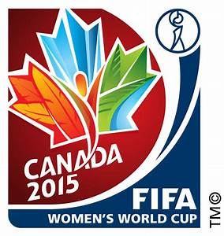

Ronaldo Luís Nazário de Lima (phát âm tiếng Bồ Đào Nha:; sinh ngày 18 tháng 9 năm 1976),[2] là một doanh nhân người Brazil, chủ tịch câu lạc bộ Real Valladolid, và là một cựu cầu thủ bóng đá từng chơi ở vị trí tiền đạo. Được mệnh danh là O Fenômeno ("Người ngoài hành tinh"),[3] và quái vật anh được coi là một trong những cầu thủ xuất sắc nhất mọi thời đại. Là một tiền đạo đa năng, Ronaldo là người có ảnh hưởng lớn đến thế hệ tiền đạo sau này. Các giải thưởng cá nhân của anh bao gồm ba lần được vinh danh là Cầu thủ xuất sắc nhất năm của FIFA và giành được hai giải Quả bóng vàng.

Xem tại đây:
Tiểu sửRo béo là tuyển thủ của đội tuyển Brazil và được mệnh danh là “người ngoài hành tinh”. Anh là một trong những cầu thủ xuất sắc nhất thời đại của anh. Những pha đi bóng của ronaldo béo có sức hút đối với khán giả mà còn được các chuyên gia bóng đá đánh giá rất cao. Ronaldo béo đi bóng giống như vũ công balo biểu diễn trên sân khấu vậy.
Xem tại đây:
Huyền Thoại Về Một Nhân Tài Bóng ĐáTrong trận đấu chung kết năm 2002, những bàn thắng của Ronaldo béo là đã lập cú đúp vào lưới đội tuyển Đức và giành chiến thắng chung cuộc 2-0. Tại trận chung kết này, Ro béo đã thi đấu với phong độ cực tốt. Cú đúp làm tung lưới đội bạn của anh được các chuyên gia đánh giá rất cao. Không chỉ vậy, anh còn có khả năng kết hợp cùng đồng đội để tiến hành thi đấu một cách tốt nhất có thể. Chiến thắng lần này đã mang lại cup vàng vô địch lần thứ 5 cho tuyển Brasil.
Tại giải này, Ro béo nhận giải thưởng vua phá lưới với 8 pha lập công suốt mùa giải. Một lần nữa cái tên Ro béo lại được vang lên đầy tự hào. Anh đã khẳng định được tài năng thiên phú của mình cùng với lối chơi vô cùng xuất sắc. Một cầu thủ trong vài năm ngắn ngủi đã khẳng định được tên tuổi trong nền bóng đá thế giới. Ronaldo béo đã chính thức trở thành cầu thủ xuất sắc nhất trong thời đại của anh.
Xem tại đây :
Trận Chung Kết Lịch Sử


.jpg)